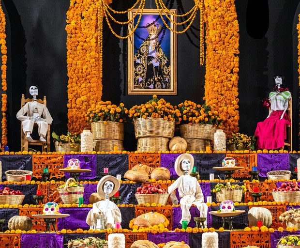

Dia de Muertos
¿Qué es el Día de Muertos? La influencia del imperio azteca aún se puede sentir en diferentes fiestas y tradiciones mexicanas, y su respeto y amor por quienes han muerto originan la actual tradición del Día de Muertos. El pueblo azteca creía en celebrar, no en lamentar, la vida de los fallecidos.
Origen

El origen del Día de Muertos se remonta a los tiempos de colonización española. Las civilizaciones originarias de Mesoamérica, tal como la azteca o la maya, conservaban los cráneos de los fallecidos como trofeos para simbolizar la muerte y el renacimiento durante los rituales. Los aztecas realizaban la celebración del dios Mictlantecuhtli y su esposa Mictecacíhuatl, quienes representaban la deidad de la muerte. Juntos ejercían la soberanía sobre las almas de los fallecidos, y sus celebraciones tenían el objetivo de realizar tributo a los familiares muertos. Durante la colonización del continente americano, los conquistadores modificaron el Día de Muertos y lo unieron con las fechas festivas del catolicismo, con el objetivo de convertir a los nativos hacia la religión católica.
Altar
Cada año, los días 1 y 2 de noviembre se colocan altares de muertos con flores y alimentos, recordando a nuestros seres queridos que ya han partido al más allá. Los elementos que tiene un altar de muertos pueden ser muchos y muy variados. Los objetos básicos incluyen veladoras, sal, incienso, calaveritas de azúcar, el tradicional pan de muerto y flores de cempasúchil. Además, solemos incluir en los altares los platillos favoritos de nuestros familiares que ya partieron, fotografías suyas, en algunas ocasiones objetos personales e incluso elementos como cigarros o algún licor. En el caso de los niños, se colocan dulces o algún juguete.